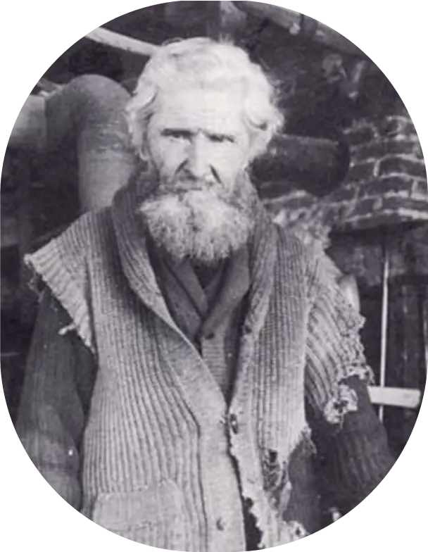
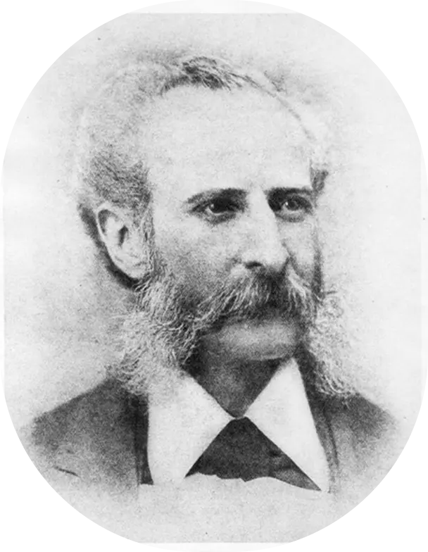

ACCUEIL
CHASSE AUX ÉPIGRAPHES
GALERIE DE PERSONNAGES
CARTE
Galerie de personnages
Filtrer par type d’indice :
Personnages
Objets
Lieux
Filtrer par secteur d’activité :
Sports et spectacle
Sciences et lettres
Économie et politique
Arts visuels
Consulter la fiche de Edmund Alleyn
Consulter la fiche de Philippe-Joseph Aubert deGaspé
Consulter la fiche d'Henriette Belley
Consulter la fiche de Robert Blatter
Consulter la fiche de Joseph Knight Boswell
Consulter la fiche de Marthe Caillaud-Simard
Consulter la fiche de Johnny Farago
Consulter la fiche de Camille Henry

Consulter la fiche de Louis Jobin

Consulter la fiche de Sigismund Mohr
Consulter la fiche d'Alfred Pellan
Consulter la fiche de Maurice Pollack